사회조사분석사-2급 (2018-08-19 기출문제)
1과목: 조사방법론 I
1. 다음은 과학적 방법의 특징 중 무엇에 관한 설명인가?
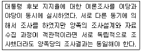
- 논리적 일관성
- 검증가능성
- 상호주관성
- 재생가능성
(정답률: 49%)

2. 관찰자료 수집의 장점에 해당하지 않은 것은?
- 관찰자의 주관성 개입방지
- 즉각적 자료수집 가능
- 비언어적 자료수집 가능
- 종단분석 가능
(정답률: 71%)
3. 질문지 작성 시 개별질문 내용을 결정할 때 고려해야 할 사항과 가장 거리가 먼 것은?
- 그 질문이 반드시 필요한가?
- 하나의 질문으로 충분한가?
- 응답자가 응답할 수 있는 질문인가?
- 조사자가 응답의 결과를 예측할 수 있는가?
(정답률: 79%)
4. 인과관계의 성립조건에 관한 설명으로 옳은 것을 모두 고른 것은?
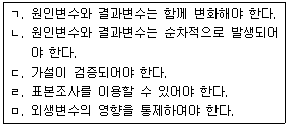
- ㄱ, ㄴ, ㅁ
- ㄱ, ㄷ, ㄹ
- ㄴ, ㄷ, ㄹ
- ㄷ, ㄹ, ㅁ
(정답률: 68%)
5. 다음 설명에 가장 적합한 연구 방법은?
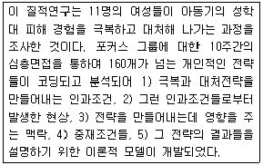
- 현상학적 연구
- 근거이론 연구
- 민속지학적 연구
- 내용분석 연구
(정답률: 37%)
6. 실험설계에 대한 설명으로 틀린 것은?
- 통제집단사후검사설계는 무작위할당으로 통제집단과 실험집단을 나누고 실험집단에만 개입을 한다.
- 정태적(static) 집단비교설계는 실험집단과 개입이 주어지지 않은 집단을 사후에 구분해서 종속변수의 값을 비교한다.
- 비동일 통제집단설계는 임의적으로 나눈 실험집단과 통제집단 간의 교류를 통제한다.
- 복수시계열설계는 실험집단과 통제집단에 대해 개입 전과 개입 후 여러 차례 종속변수를 측정한다.
(정답률: 36%)
7. 서베이(survey)에서 우편설문법과 비교한 대인 면접법의 특성으로 틀린 것은?
- 비언어적 행위의 관찰이 가능하다.
- 대리응답의 가능성이 낮다.
- 설문과정에서의 유연성이 높다.
- 응답환경을 구조화하기 어렵다.
(정답률: 77%)
8. 다음 중 과학적 조사연구의 특징과 가장 거리가 먼 것은?
- 논리적 체계성
- 주관성
- 수정가능성
- 경험적 실증성
(정답률: 81%)
9. 다음에서 설명하는 가설의 종류는?
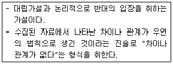
- 귀무가설
- 통계적 가설
- 대안가설
- 설명적 가설
(정답률: 84%)
10. 일반적인 질문지 작성원칙과 가장 거리가 먼 것은?
- 질문은 의미가 명확하고 간결해야 한다.
- 한 질문에 한 가지 내용만 포함되도록 한다.
- 응답지의 각 항목은 상호배타적이어야 한다.
- 과학적이며 학문적인 용어를 선택해서 사용해야 한다.
(정답률: 78%)
11. 가설의 특성에 관한 설명으로 틀린 것은?
- 가설은 검증될 수 있어야 한다.
- 가설은 문제를 해결해 줄 수 있어야 한다.
- 가설이 부인되었다면 반대되는 가설이 검증된 것이다.
- 가설은 변수로 구성되며, 그들 간의 관계를 나타내고 있어야 한다.
(정답률: 60%)
12. 특정한 시기에 태어났거나 동일 시점에 특정 사건을 경험한 사람들을 대상으로 이들이 시간이 지남에 따라 어떻게 변화하는지를 조사하는 방법은?
- 사례조사
- 패널조사
- 코호트조사
- 전문가의견조사
(정답률: 70%)
13. 질적 현장연구 중 초점집단연구의 특성과 가장 거리가 먼 것은?
- 빠른 결과를 보여준다.
- 높은 타당도를 가진다.
- 개인면접에 비해 연구대상을 통제하기 수월하다.
- 사회환경에서 일어나는 실제의 생활을 포착하는 사회지향적 연구방법이다.
(정답률: 57%)
14. 일반적으로 실행되는 면접조사, 전화조사, 우편조사를 비교한 설명으로 틀린 것은?
- 익명성을 보장하려면 면접조사보다는 우편조사를 실시한다.
- 복잡한 질문을 다루는 데는 면접조사가 가장 적합하다.
- 조사자의 영향을 가장 적게 받는 것은 전화조사이다.
- 3가지 방법 모두 개방형 질문을 활용할 수 있다.
(정답률: 68%)
15. 경험적 연구방법에 대한 설명으로 옳은 것은?
- 실험은 연구자가 독립변수와 종속변수 모두를 통제하는 연구방법이다.
- 심리상태를 파악하는 데는 관찰에 의한 연구방법이 효과적이다.
- 내용분석은 어린이나 언어가 통하지 않는 조사대상자에 대한 연구방법으로 자주 사용된다.
- 대규모 모집단을 연구하는 데는 질문지를 이용한 조사연구가 효과적이다.
(정답률: 55%)
16. 다음은 조사연구과정의 일부이다. 이를 순서대로 나열한 것은?
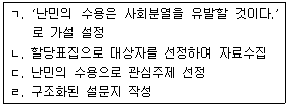
- ㄱ→ㄴ→ㄷ→ㄹ
- ㄱ→ㄷ→ㄹ→ㄴ
- ㄷ→ㄱ→ㄹ→ㄴ
- ㄷ→ㄹ→ㄱ→ㄴ
(정답률: 76%)
17. 내용분석에 관한 설명과 가장 거리가 먼 것은?
- 분석대상에 영향을 미치지 않는다.
- 필요한 경우 재분석이 가능하다.
- 양적 내용을 질적 자료로 전환한다.
- 다양한 기록자료 유형을 분석할 수 있다.
(정답률: 74%)
18. 다음 중 관찰의 단점과 가장 거리가 먼 것은?
- 피관찰자가 관찰사실을 아는 경우 조사반응성으로 인한 왜곡이 있을 수 있다.
- 표현능력이 부족한 대상에게 적용이 어렵다.
- 연구대상의 특성상 관찰할 수 없는 문제가 있다.
- 자료처리가 어렵다.
(정답률: 74%)
19. 다음 중 폐쇄형 질문의 단점과 가장 거리가 먼 것은?
- 응답이 끝난 후 코딩이나 편집 등의 번거로운 절차를 거쳐야 한다.
- 응답자들이 말하고자 하는 내용을 보다 구체적으로 도출해 낼 수가 없다.
- 개별 응답자들의 특색 있는 응답내용을 보다 생생하게 기록해 낼 수가 없다.
- 각각 다른 내용의 응답이라도 미리 제시된 응답 항목이 한가지로 제한되어 있는 경우 동일한 응답으로 잘못 처리될 위험성이 있다.
(정답률: 75%)
20. 사회과학에서 조사연구를 실시하기에 적합한 주제가 아닌 것은?
- 지능지수와 학업성적은 상관성이 있는가?
- 기업족지의 수준과 노사분규의 빈도와의 관계는?
- 여성들은 직장에서 차별대우를 받고 있는가?
- 개기일식은 왜 일어나는가?
(정답률: 79%)
21. 다음 중 면접원의 자율성이 가장 적은 면접 유형은?
- 초점집단면접
- 심층면접
- 구조화면접
- 임상면접
(정답률: 75%)
22. 다음 중 심층규명(probing)을 하고자 할 때 가장 적합한 조사방법은?
- 우편 설문 조사
- 온라인 설문 조사
- 간접관찰 조사
- 비구조화 면접 조사
(정답률: 82%)
23. 연역법과 귀납법에 관한 설명으로 옳은 것은?
- 연역법은 선(先)조사 후(後)이론의 방법을 택한다.
- 연역법과 귀납법은 상호보완적으로 사용할 수 없다.
- 연역법과 귀납법의 선택은 조사의 용이성에 달려 있다.
- 기존 이론의 확인을 위해서는 연역법을 주로 사용한다.
(정답률: 60%)
24. 사회조사에서 생태학적오류(ecological fallacy)란?
- 주변 환경에 대한 주요 정보를 누락시키는 오류
- 연구에서 사회조직의 활동결과인 사회적 산물들을 누락시키는 오류
- 집단이나 집합체에 관한 성격을 바탕으로 개인들에 대한 성격을 규정하게 되는 연구분석 단위의 혼란
- 사회조사설계 과정에서 문제를 중심으로 관련된 여러 체계들 간의 상호작용 가능성에 대한 고려를 누락시키는 오류
(정답률: 78%)
25. 양적-질적 연구방법의 비교에서 질적 연구방법에 대한 옳은 설명을 모두 고른 것은?
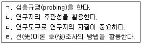
- ㄱ, ㄴ, ㄷ
- ㄱ, ㄷ, ㄹ
- ㄴ, ㄹ
- ㄱ, ㄴ, ㄷ, ㄹ
(정답률: 58%)
26. 면접을 시행하는 면접원의 평가기준과 가장 거리가 먼 것은?
- 응답 성공률
- 면접 소요 시간
- 래포(rapport) 형성 능력
- 무응답 문항의 편집 능력
(정답률: 68%)
27. 표준화된 면접조사를 시행함에 있어 유의해야 할 사항과 가장 거리가 먼 것은?
- 응답자로 하여금 면접자와의 상호작용이 유쾌하며 만족스러운 것이 될 것이라고 느끼도록 해야 한다.
- 응답자로 하여금 그 조사를 가치 있는 것으로 생각하도록 해야 한다.
- 응답자에게 연구자의 가치와 생각을 알려준다.
- 조사표에 담긴 질문내용에서 벗어나는 질문을 해서는 안 된다.
(정답률: 82%)
28. 다음 중 조사연구결과의 일반화와 가장 관련이 깊은 것은?
- 내적 타당성
- 외적 타당성
- 신뢰성
- 자료수집방법
(정답률: 61%)
29. 2차 문헌자료를 활용할 때 주의해야 할 사항이 아닌 것은?
- 샘플링의 편향성(bias)
- 반응성(reactivity) 문제
- 자료 간 일관성 부재
- 불완전한 정보의 한계
(정답률: 70%)
30. 질문지 문항 작성 원칙에 부합하는 질문을 모두 고른 것은?
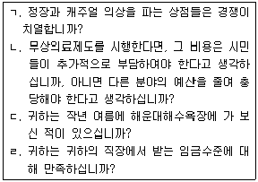
- ㄱ, ㄴ
- ㄴ, ㄷ
- ㄷ, ㄹ
- ㄱ, ㄹ
(정답률: 73%)
2과목: 조사방법론 II
31. 신뢰도와 타당도에 영향을 미치는 요인과 가장 거리가 먼 것은?
- 조사도구
- 조사환경
- 조사목적
- 조사대상자
(정답률: 63%)
32. 명목척도 구성을 위한 측정범주들에 대한 기본 원칙과 가장 거리가 먼 것은?
- 배타성
- 포괄성
- 논리적 연관성
- 선택성
(정답률: 49%)
33. 다음 ( )에 알맞은 것은?
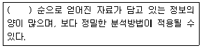
- 서열측정 ＞ 명목측정 ＞ 비율측정 ＞ 등간측정
- 명목측정 ＞ 서열측정 ＞ 등간측정 ＞ 비율측정
- 등간측정 ＞ 비율측정 ＞ 서열측정 ＞ 명목측정
- 비율측정 ＞ 등간측정 ＞ 서열측정 ＞ 명목측정
(정답률: 72%)
34. 표본추출과 관련된 용어 설명으로 틀린 것은?
- 관찰단위 : 직접적인 조사대상
- 모집단 : 연구하고자 하는 이론상의 전체집단
- 표집률 : 모집단에서 개별 요소가 선택될 비율
- 통계량(statistic) : 모집단에서 어떤 변수가 가지고 있는 특성을 요약한 통계치
(정답률: 55%)
35. 측정의 체계적 오류와 관련이 있는 것은?
- 통계적 회귀
- 생태학적 오류
- 환원주의적 오류
- 사회적 바람직성 편향
(정답률: 50%)
36. 지수(index)와 척도(scale)에 관한 설명으로 틀린 것은?
- 지수와 척도 모두 변수에 대한 서열측정이다.
- 척도점수는 지수점수보다 더 많은 정보를 전달한다.
- 지수와 척도 모두 둘 이상의 자료문항에 기초한 변수의 합성 측정이다.
- 지수는 동일한 변수의 속성들 가운데서 그 강도의 차이를 이용하여 구별되는 응답 유형을 밝혀낸다.
(정답률: 43%)
37. 다음 사례와 같이 조사대상자들로부터 정보를 얻어 다른 조사대상자를 구하는 표집방법은?
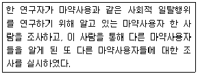
- 눈덩이표집(snowball sampling)
- 판단표집(judgment sampling)
- 할당표집(quota sampling)
- 편의표집(convenience sampling)
(정답률: 82%)
38. 실험설계를 통해 인과관계를 추론하기 위해서 서로 다른 값을 갖도록 처치를 하는 변수는?
- 외적변수
- 종속변수
- 이산변수
- 독립변수
(정답률: 59%)
39. 측정의 신뢰도를 높이는 방법으로 적절하지 않은 것은?
- 측정도구의 모호성을 없앤다.
- 동일한 개념이나 속성을 측정하기 위해 여러 개의 항목보다는 단일항목을 이용한다.
- 측정자들의 면접방식과 태도의 일관성을 취한다.
- 조사 대상자가 잘 모르거나 전혀 관심이 없는 내용에 대해서는 측정을 삼간다.
(정답률: 75%)
40. 표본 크기의 결정에 관한 설명으로 틀린 것은?
- 표본의 크기는 작을수록 좋다.
- 조사결과의 분석방법에 따라 달라진다.
- 조사연구에서 수집될 자료의 양은 표본의 크기에 의해 결정된다.
- 조사연구에 포함된 변수가 많으면 표본의 크기는 늘어나야 한다.
(정답률: 77%)
41. 다음은 어떤 척도의 특징인가?
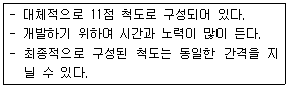
- 리커트척도(likert scale)
- 서스톤척도(thurston scale)
- 보가더스척도(bogardus scale)
- 오스굿(osgood) 척도
(정답률: 54%)
42. 조작적 정의에 관한 설명으로 틀린 것은?
- 주어진 단어가 이미 정립된 의미를 가진 다른 표현과 동의적일 때에 사용된다.
- 용어의 지시물을 식별하는 데 사용되는 관찰 가능한 개념의 구체화이다.
- 변수는 그것을 관찰과 측정의 단계가 분명히 밝혀져 있을 때 조작적으로 정의될 수 있다.
- 추상적 개념을 측정 가능한 수치로 변환하는 과정을 의미한다.
(정답률: 60%)
43. 표집(sampling)의 대표성에 대한 의미와 가장 거리가 먼 것은?
- 표본을 이용한 분석결과가 일반화될 수 있는가의 문제
- 표본자료가 계량 통계분석기법을 적용하기에 적합한가의 문제
- 표본의 통계적 특성이 모집단의 통계적 특성에 어느 정도 근접하느냐의 문제
- 표본이 모집단이 지닌 다양한 성격을 고루 반영하느냐의 문제
(정답률: 64%)
44. 측정도구의 내용 타당도를 평가하는 방법과 가장 거리가 먼 것은?
- 관련 분야 전문가들의 자문을 구한다.
- 측정대상과 관련된 이론들을 판단기준으로 사용한다.
- 패널토의나 워크숍 등을 통하여 타당도에 관한 의견을 수렴한다.
- 측정도구를 반복하여 측정하고 그 관계를 알아본다.
(정답률: 63%)
45. 스피어만-브라운(Spearman-Brown) 공식은 주로 어떤 경우에 사용되는가?
- 동형검사 신뢰도 추정
- Kuder-Richardson 신뢰도 추정
- 반분신뢰도로 전체 신뢰도 추정
- 범위의 축소로 인한 예언타당도에 대한 교정
(정답률: 57%)
46. 일주일의 시간 간격을 두고 동일한 문제지를 가지고 같은 반 학생들을 대상으로 EQ 검사를 두 차례 실시하였더니 그 결과 매우 상이하게 나타났다. 이 문제지가 가지는 문제점은?
- 타당성
- 예측성
- 대표성
- 신뢰성
(정답률: 69%)
47. 표본추출을 위한 모집단의 구성요소나 표본추출 단위가 수록된 목록은?
- 요소(element)
- 표집틀(sampling frame)
- 분석단위(unit of analysis)
- 표본추출분포(sampling distribution)
(정답률: 70%)
48. 다음 중 측정에 관한 설명으로 틀린 것은?
- 측정이란 사물이나 사건의 속성에 수치를 부여하는 작업이다.
- 측정에서는 연구자의 주관적인 판단이 중요한 기능을 한다.
- 경험의 세계와 추상적인 관념의 세계를 연결하는 기능을 가진다.
- 측정은 과학적 연구에서 필수적이다.
(정답률: 75%)
49. A기업에서 공개채용시험의 타당성을 평가하려는 계획을 세웠다. 우선 입사시험성적과 그 직원의 채용된 후 근무성적을 비교하여 타당성을 평가한다면 이는 무슨 타당성인가?
- 기준관련타당성(criterion-related validity)
- 내용타당성(content validity)
- 구성타당성(construct validity)
- 논리적타당성(logical validity)
(정답률: 60%)
50. 어떤 선생님이 학생들의 지능지수(IQ)를 측정하기 위해 정확하기로 소문난 전자저울(체중계)을 사용했을 때, 측정의 신뢰도와 타당도에 관한 설명으로 옳은 것은?
- 신뢰도와 타당도 모두 낮다.
- 신뢰도와 타당도 모두 높다.
- 신뢰도는 낮지만 타당도는 높다.
- 신뢰도는 높지만 타당도는 낮다.
(정답률: 68%)
51. 변수의 종류에 관한 설명으로 바르게 짝지어진 것은?
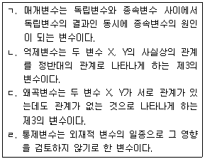
- ㄱ, ㄴ
- ㄴ, ㄷ
- ㄷ, ㄹ
- ㄱ, ㄹ
(정답률: 57%)
52. 거트만척도(Guttman Scale)데 대한 설명으로 틀린 것은?
- 누적척도(Cumulative Scale)라고도 한다.
- 단일차원의 서로 이질적인 문항으로 구성되며 여러 개의 변수를 측정한다.
- 재생가능성을 통해 척도의 질을 판단한다.
- 일단 자료가 수집된 이후에 구성될 수 있다.
(정답률: 40%)
53. 다음 중 비확률 표본추출 방법에 해당하는 것은?
- 단순무작위표집(simple random sampling)
- 층화표집(stratified random sampling)
- 유의표집(purposive sampling)
- 군집표집(cluster sampling)
(정답률: 73%)
54. 온도계의 눈금을 나타내는 수치의 측정수준은?
- 명목측정
- 서열측정
- 비율측정
- 등간측정
(정답률: 70%)
55. 표집틀(Sampling Frame)을 평가하는 주요 요소와 가장 거리가 먼 것은?
- 포괄성
- 안정성
- 추출확률
- 효율성
(정답률: 51%)
56. 확률 표본추출법과 비확률 표본추출법에 대한 설명으로 틀린 것은?
- 확률 표본추출법은 연구대상이 표본으로 추출될 확률이 알려져 있으며, 비확률 표본추출법은 표본으로 추출될 확률이 알려져 있지 않은 경우의 추출법이다.
- 확률 표본추출법은 표본분석 결과의 일반화가 가능하고 비확률 표본추출법은 일반화가 제약된다.
- 확률 표본추출법은 표본오차의 추정이 불가능하고, 비확률 표본추출법은 표본오차의 추정이 가능하다.
- 일반적으로 확률 표본추출법은 시간과 비용이 많이 들고, 비확률 표본추출법은 시간과 비용이 적게 든다.
(정답률: 73%)
57. 다음 중 군집 표집(Cluster Sampling)은 어떤 경우에 추정 효율이 가장 높은가?
- 각 군집이 모집단의 축소판일 경우
- 각 군집마다 군집들의 특성이 서로 다른 경우
- 각 군집 내 관측값들이 비슷할 경우
- 군집 평균들이 서로 다른 경우
(정답률: 63%)
58. 선거예측조사에서 출구조사를 할 경우, 주로 사용되는 표집방법은?
- 할당표집(quota sampling)
- 체계적표집(systematic sampling)
- 군집표집(cluster sampling)
- 층화표집(stratified random sampling)
(정답률: 45%)
59. 개념적 정의에 대한 설명으로 옳은 것은?
- 측정 가능성과 직결된 정의이다.
- 조작적 정의를 현실세계의 현상과 연결시켜주는 역할을 수해한다.
- 거짓과 진실을 밝히기 위해 정의하는 것이다.
- 어떤 개념을 보다 명확하고 정확하게 표현하기 위하여 다른 개념을 사용하여 정의하는 것이다.
(정답률: 63%)
60. 표본추출 과정을 바르게 나열한 것은?
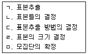
- ㅁ→ㄷ→ㄹ→ㄴ→ㄱ
- ㅁ→ㄴ→ㄷ→ㄹ→ㄱ
- ㄹ→ㅁ→ㄴ→ㄷ→ㄱ
- ㄷ→ㅁ→ㄴ→ㄹ→ㄱ
(정답률: 66%)
3과목: 사회통계
61. 공정한 주사위 1개를 20번 던지는 실험에서 1의 눈을 관찰한 횟수를 확률변수 X라 하고, 정규근사를 이용하여 P(X≥4)의 근사값을 구하려 한다. 다음 중 연속성 수정을 고려한 근사식으로 옳은 것은? (단, Z는 표준정규분포를 따르는 확률변수)
- P(Z≥0.1)
- P(Z≥0.4)
- P(Z≥0.7)
- P(Z≥1)
(정답률: 22%)
62. 다음은 왼손으로 글자를 쓰는 사람을 8명에 대하여 왼손의 악력 X와 오른손의 악력 Y를 측정하여 정리한 결과이다. 왼손으로 글자를 쓰는 사람들의 왼손 악력이 오른손 악력보다 강하다고 할 수 있는가에 대해 유의수준 5%에서 검정하고자 한다. 검정통계량 T의 값과 기각역을 구하면?
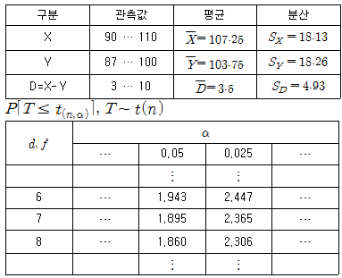
- T=2.01, T≥1.895
- T=0.71, T≥1.860
- T=2.01, |T|≥2.365
- T=0.71, |T|≥1.895
(정답률: 32%)
63. 단순선형회귀모형
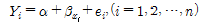
에서 최소제곱추정량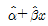
로부터 잔차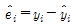
로부터 서로 독립이고 등분산인 오차들의 분산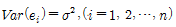
의 불편추정량을 구하면?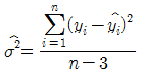
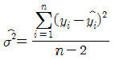
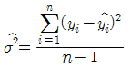
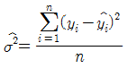
(정답률: 32%)
64. 다음 중 중심위치의 척도와 가장 거리가 먼 것은?
- 중앙값
- 표준편차
- 평균
- 최빈수
(정답률: 60%)
65. 남자 직원과 여자 직원의 임금을 조사하여 다음과 같은 결과를 얻었다. 변동(변이)계수에 근거한 남녀 직원 임금의 산포에 관한 설명으로 옳은 것은?
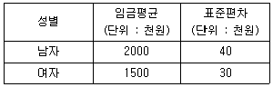
- 남자 직원임금의 산포가 더 크다.
- 여자 직원임금의 산포가 더 크다.
- 남자 직원과 여자 직원의 임금의 산포가 같다.
- 이 정보로는 산포를 설명할 수 없다.
(정답률: 58%)
66. 일원배치법에 대한 설명으로 옳은 것은?
- 한 종류의 인자가 특성값에 미치는 영향을 조사하고자 할 때 사용하는 분석법이다.
- 인자의 처리별 반복수는 동일하여야 한다.
- 3명의 기술자가 3가지의 재료를 이용해서 어떤 제품을 만들고자 할 때 가장 좋은 제품을 만들 수 있는 조건을 찾으려면 일원배치법이 적절한 방법이다.
- 일원배치법에 의해 여러 그룹의 분산의 차이를 해석할 수 있다.
(정답률: 39%)
67. 다음 자료는 설명변수(X)와 반응변수(Y) 사이의 관계를 알아보기 위하여 조사한 자료이다. 설명변수(X)와 반응변수(Y) 사이에 단순회귀모형을 가정할 때, 회귀직선의 기울기에 대한 추정값은 얼마인가?
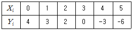
- -2
- -1
- 1
- 2
(정답률: 38%)
68. 어느 대학교에서 학생들을 대상으로 4개의 변수(키, 몸무게, 혈액형, 월평균 용돈)에 대한 관측값을 얻었다. 4개의 변수 중에서 최빈값을 대푯값으로 사용할 때 가장 적절한 변수는?
- 키
- 혈액형
- 몸무게
- 월평균 용돈
(정답률: 70%)
69. 작년도 자료에 의하면 어느 대학교의 도서관에서 도서를 대출한 학부 학생들의 학년별 구성비는 1학년 12%, 2학년 20%, 3학년 33%, 4학년 35%였다. 올해 이 도서관에서 도서를 대출한 학부 학생들의 학년별 구성비가 작년도와 차이가 있는가를 분석하기 위해 학부생 도서 대출자 400명을 랜덤하게 추출하여 학생들의 학년별 도수를 조사하였다. 이 자료를 갖고 통게적인 분석을 하는 경우 사용되는 검정통계량은?
- 자유도가 4인 카이제곱 검정통계량
- 자유도가 (3, 396)인 F-검정통계량
- 자유도가 (1, 398)인 F-검정통계량
- 자유도가 3인 카이제곱 검정통계량
(정답률: 46%)
70. 평균이 μ이고, 표준편차가 σ인 모집단으로부터 크기가 n인 확률표본을 취할 때, 표본평균
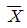
의 분포에 대한 설명으로 옳은 것은?- 표본의 크기가 커짐에 따라 점근적으로 평균이 μ이고 표준편차가 σ/√n인 정규분포를 따른다.
- 표본의 크기가 커짐에 따라 평균이 μ이고 표준편차가 σ/n정규분포를 따른다.
- 모집단의 확률분포와 동일한 분포를 따르되, 평균은 μ이고 표준편차가 σ/√n이다.
- 모집단의 확률분포와 동일한 분포를 따르되, 평균은 μ이고 표준편차가 σ/n이다.
(정답률: 45%)
71. 분산분석에 대한 설명으로 옳은 것은?
- 분산분석이란 각 처리집단의 분산이 서로 같은지를 검정하기 위한 방법이다.
- 비교하려는 처리집단이 k개 있으면 처리에 의한 자유도는 k-2가 된다.
- 두 개의 요인이 있을 때 각 요인의 주효과를 알아보기 위해서는 요인간 교호작용이 있어야 한다.
- 일원배치분산분석에서 일원배치의 의미는 반응변수에 영향을 주는 요인이 하나인 것을 의미한다.
(정답률: 44%)
72. 2010년 도소매업의 사업체당 종사자수는 평균 3.0명이고 변동계수는 0.4이다. 95% 신뢰구간으로 옳은 것은? (단, z0.⑤=1.645, z0.025=1.96)(오류 신고가 접수된 문제입니다. 반드시 정답과 해설을 확인하시기 바랍니다.)
- 0.648명 ~ 5.352명
- 2.216명 ~ 3.784명
- 1.026명 ~ 4.974명
- 2.342명 ~ 3.658명
(정답률: 20%)
73. 다음은 서로 다른 3가지 포장형태(A, B, C)의 선호도가 같은지를 90명을 대상으로 조사한 결과이다. 선호도가 동일한지를 검정하는 카이제곱 검정통계량의 값은?
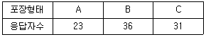
- 2.87
- 2.97
- 3.07
- 4.07
(정답률: 42%)
74. 단순회귀모형 Yi=α+βxi에서 회귀계수 β를 최소자승법(least squares method)으로 추정하는 경우와 εi가 평균이 0, 분산이 σ2인 정규분포를 따른다는 가정 하에 최대우도법(maximum likeihood method)으로 추정하는 경우의 설명으로 옳은 것은?
- 최소자승법으로 구한 β가 최대우도법으로 구한 β보다 크다.
- 최소자승법으로 구한 β가 최대우도법으로 구한 β보다 작다.
- 최소자승법으로 구한 β가 최대우도법으로 구한 β는 같다.
- 최소자승법으로 구한 β가 최대우도법으로 구한 β는 크기를 비교할 수 없다.
(정답률: 34%)
75. 버스전용차로를 유지해야 하는 것에 대해 찬반 비율을 조사하기 위하여 서울에 거주하는 성인 1000명을 임의로 추출하여 조사한 결과 700명이 찬성한다고 응답하였다. 서울에 거주하는 성인 중 버스전용차로제에 찬성하는 사람의 비율의 추정치는?
- 0.4
- 0.5
- 0.6
- 0.7
(정답률: 72%)
76. X와 Y 의 평균과 분산은 각각 E(X)=4, V(X)=8, E(Y)=10, V(Y)=32이고, E(XY)=28이다. 2X+1 과 -3Y+5 의 상관계수는?
- 0.75
- -0.75
- 0.67
- -0.67
(정답률: 17%)
77. 확률변수 X는 이항분포 B(n,p)를 따른다고 하자. n=10, p=0.5일 때, 확률변수 X의 평균과 분산은?
- 평균 2.5, 분산 5
- 평균 2.5, 분산 2.5
- 평균 5, 분산 5
- 평균 5, 분산 2.5
(정답률: 69%)
78. 주머니 안에 6개의 공이 들어 있다. 그 중 1개에는 1, 2개에는 2, 3개에는 3이라고 쓰여 있다. 주머니에서 공 하나를 무작위로 꺼내 나타난 숫자를 확률변수 X라 하고, 다른 확률변수 Y=3×X+5라 할 때, 다음 중 틀린 것은?
- E(X)=7/3
- Var(X)=5/9
- E(Y)=12
- Var(Y)=15/9
(정답률: 39%)
79. 퀴즈 게임에서 우승한 철수는 주사위를 던져서 그 나온 숫자에 100,000원을 곱한 상금을 받게 되었다. 그런데 그 주사위에는 홀수가 없이 짝수만이 있다. 즉 2가 2면, 4가 2면, 6이 2면인 것이다. 그 주사위를 던졌을 때 받게 될 상금의 기댓값은 얼마인가?
- 300,000원
- 400,000원
- 350,000원
- 450,000원
(정답률: 62%)
80. 검정력(power)에 관한 설명으로 옳은 것은?
- 귀무가설이 옳음에도 불구하고 이를 기각할 확률이다.
- 옳은 귀무가설을 채택할 확률이다.
- 대립가설이 참일 때, 귀무가설을 기각할 확률이다.
- 거짓인 귀무가설을 채택할 확률이다.
(정답률: 57%)
81. 통계학 과목의 기말고사 성적은 평균(mean)이 40점, 중위값(median)이 38점이었다. 점수가 너무 낮아서 담당 교수는 12점의 기본점수를 더해 주었다. 새로 산정한 점수의 중위값은?
- 40점
- 42점
- 50점
- 52점
(정답률: 68%)
82. 가설검정의 오류에 대한 설명으로 틀린 것은?
- 제2종 오류는 대립가설()이 사실일 때 귀무가설()을 채택하는 오류이다.
- 가설검정의 오류는 유의수준과 관계가 있다.
- 제1종 오류를 작게 하기 위해서는 유의수준을 크게 할 필요가 있다.
- 제1종 오류와 제2종 오류를 범할 가능성은 반비례관계에 있다.
(정답률: 55%)
83. 공정한 주사위 1개를 굴려 윗면에 나타난 수를 X라 할 때, X의 기댓값은?
- 3
- 3.5
- 6
- 2.5
(정답률: 51%)
84. 어느 포장기계를 이용하여 생산한 제품의 무게는 평균이 240g, 표준편차는 8g인 정규분포를 따른다고 한다. 이 기계에서 생산한 제품 25개의 평균 무게가 242g 이하일 확률은? (단, Z는 표준정규분포를 따르는 확률변수)
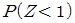
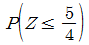
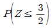
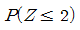
(정답률: 54%)
85. 컴퓨터 제조회사에서 보증기간을 정하려고 한다. 컴퓨터 수명은 평균 3년, 표준편차 9개월인 정규분포를 따른다고 한다. 보증기간 이전에 고장이 나면 무상수리를 해 주어야 한다. 이 회사는 출하 제품 가운데 5% 이내에서만 무상수리가 되기를 원한다. 보증기간을 몇 개월로 정하면 되겠는가? (단, P(Z＞1.645)=0.⑤)(오류 신고가 접수된 문제입니다. 반드시 정답과 해설을 확인하시기 바랍니다.)
- 17
- 19
- 21
- 23
(정답률: 37%)
86. 회귀식에서 결정계수 R2에 관한 설명으로 틀린 것은?
- 단순회귀모형에서는 종속변수와 독립변수의 상관계수의 제곱과 같다.
- R2은 독립변수의 수가 늘어날수록 증가하는 경향이 있다.
- 모든 측정값이 한 직선상에 놓이면 R2의 값은 0이다.
- R2값은 0에서 1까지 값을 가진다.
(정답률: 49%)
87. 중회귀모형
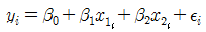
에 대한 분산분석표가 다음과 같다.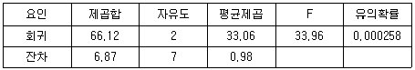
위의 분산분석표를 이용하여 유의수준 0.⑤에서 모형에 대한 유의성검정을 할 때, 추론 결과로 가장 적합한 것은?- 두 설명변수 x1과 x2모두 반응변수에 영향을 주지 않는다.
- 두 설명변수 x1과 x2모두 반응변수에 영향을 준다.
- 두 설명변수 x1과 x2중 적어도 하나는 반응변수에 영향을 준다.
- 두 설명변수 x1과 x2중 하나는 반응변수에 영향을 준다.
(정답률: 47%)
88. 확률변수 X가 평균이 100이고 표준편차가 10인 정규분포를 따른다고 했을 때, X가 80보다 작을 확률은 얼마인가? (단, p(-0.2＜z＜0.2)=0.159, p(-2＜z＜2)=0.954)
- 0.477
- 0.079
- 0.421
- 0.023
(정답률: 43%)
89. 시계에 넣는 배터리 16개의 수명을 측정한 결과 평균이 2년이고 표준편차가 1년이었다. 이 배터리 수명의 95% 신뢰구간을 구하면? (단, t(15,0.025)=2.13)
- (1.47, 2.53)
- (1.73, 2.27)
- (1.87, 2.13)
- (1.97, 2.03)
(정답률: 42%)
90. 4 × 5 분할표 자료에 대한 독립성검정에서 카이제곱 통계량의 자유도는?
- 9
- 12
- 19
- 20
(정답률: 57%)
91. 양의 확률을 갖는 사건 A, B, C의 독립성에 대한 설명으로 틀린 것은?
- A와 B가 독립이면, A와 BC또한 독립이다.
- A와 B가 독립이면, AC와 BC또한 독립이다.
- A와 B가 배반사건이면 A와 B독립이 아니다.
- A와 B가 독립이고 A와 C가 독립이면, A와 B∩C 또한 독립이다.
(정답률: 28%)
92. 지난 해 C대학 야구팀은 총 77게임을 하였는데 37번의 홈경기에서 26게임을 이긴 반면에 40번의 원정경기에서는 23게임을 이겼다. 홈경기 승률(
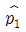
)과 원정경기 승률(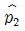
) 간의 차이에 대한 95% 신뢰구간으로 옳은 것은? (단,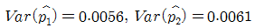
이며, 표준정규분포에서 P(Z≥1.65)=0.⑤이고 P(Z≥1.96)=0.025 이다.)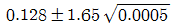
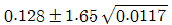
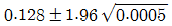
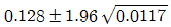
(정답률: 35%)
93. 일원배치모형을 xij=μ+ai+εij(i=1,2,⋯,k;j=1,2,⋯1n)로 나타낼 때, 분산분석표를 이용하여 검정하려는 귀무가설 H0는? (단, i 는 처리, j 는 반복을 나타내는 첨자이며, 오차항 εij~N(0,σ2)이고 서로 독립적이며
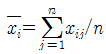
이다.)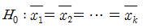
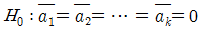
- H0: 적어도 한 ai 는 0이 아니다.
- H0: 오차항 εijai들은 서로 독립이다.
(정답률: 31%)
94. 다음 중 중회귀모형에서 오차분석 σ2<의 추정량은? (단, ei는 잔차를 나타낸다.)
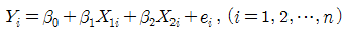
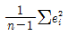
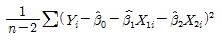
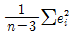
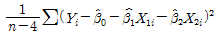
(정답률: 27%)
95. “남녀간 월급여의 차이가 있다” 라는 주장을 검정하기 위하여 사회조사를 실시하였다. 조사결과 남자집단의 월평균급여를 μ1, 여자집단의 월평균급여를 μ2라고 한다면 귀무가설은?(오류 신고가 접수된 문제입니다. 반드시 정답과 해설을 확인하시기 바랍니다.)
- μ1 ＞ μ2
- μ1 = μ2
- μ1 ＜ μ2
- μ1 ≠ μ2
(정답률: 53%)
96. 표본의 수가 n이고, 독립변수의 수가 k인 중선형회귀모형의 분산분석표에서 잔차제곱합SSE의 자유도는?
- k
- k+1
- n-k-1
- n-1
(정답률: 63%)
97. 어떤 정책에 대한 찬성여부를 알아보기 위해 400명을 랜덤하게 조사하였다. 무응답이 없다고 했을 때 신뢰수준 95% 하에서 통계적 유의성이 만족되려면 적어도 몇 명이 찬성해야 하는가? (단, z0.⑤=1.645, z0.025=1.96)
- 2⑤명
- 210명
- 215명
- 220명
(정답률: 22%)
98. 자료 x1+x2,⋯,xn의 표준편차가 3일 때, -3x1,-3x2,⋯,-3xn의 표준편차는?
- -3
- 9
- 3
- -9
(정답률: 41%)
99. 분산분석에 대한 옳은 설명만 짝지어진 것은?
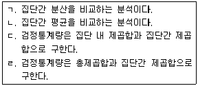
- ㄱ, ㄷ
- ㄱ, ㄹ
- ㄴ, ㄷ
- ㄴ, ㄹ
(정답률: 29%)
100. 3개의 공정한 동전을 던질 때 적어도 앞면이 하나 이상 나올 확률은?
- 7/8
- 6/8
- 5/8
- 4/8
(정답률: 60%)